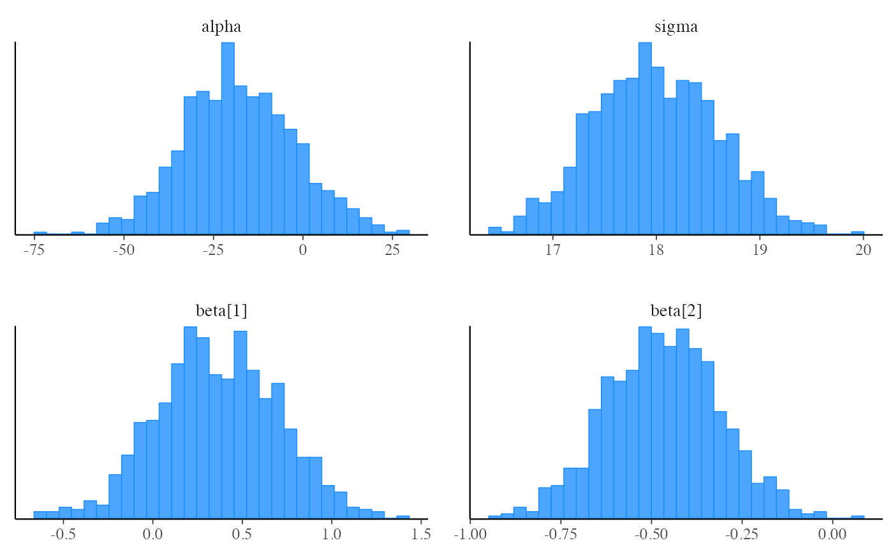
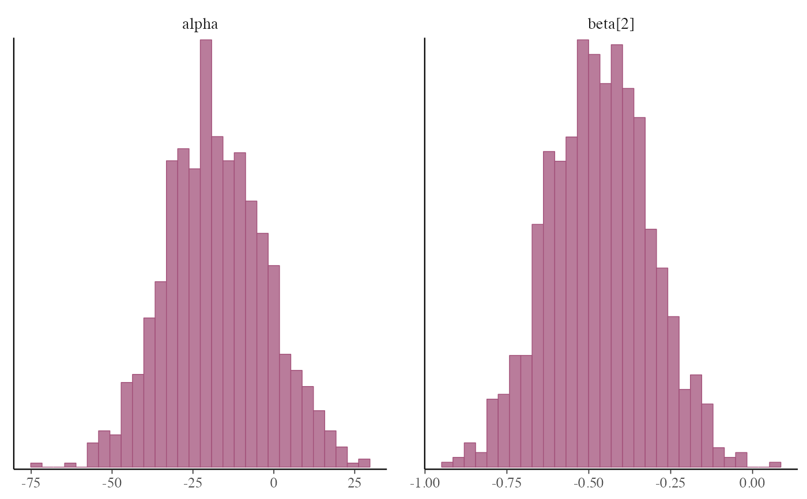
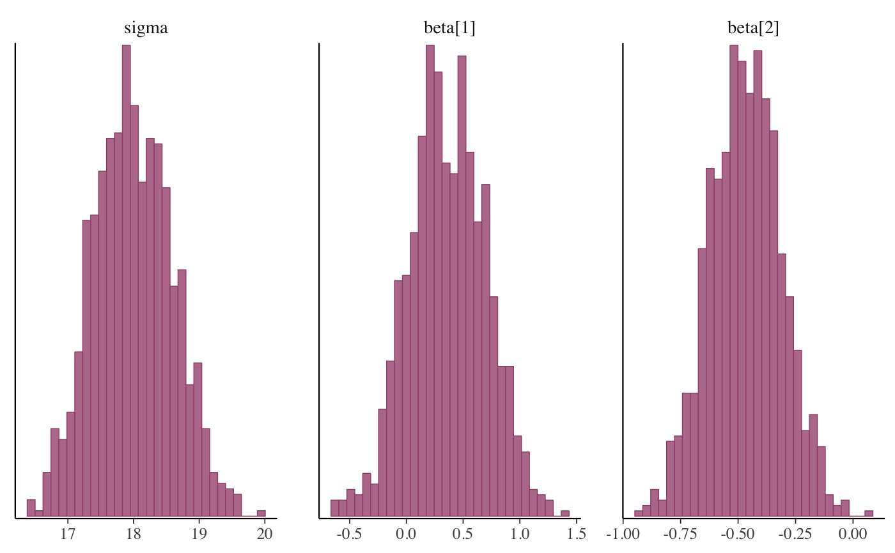
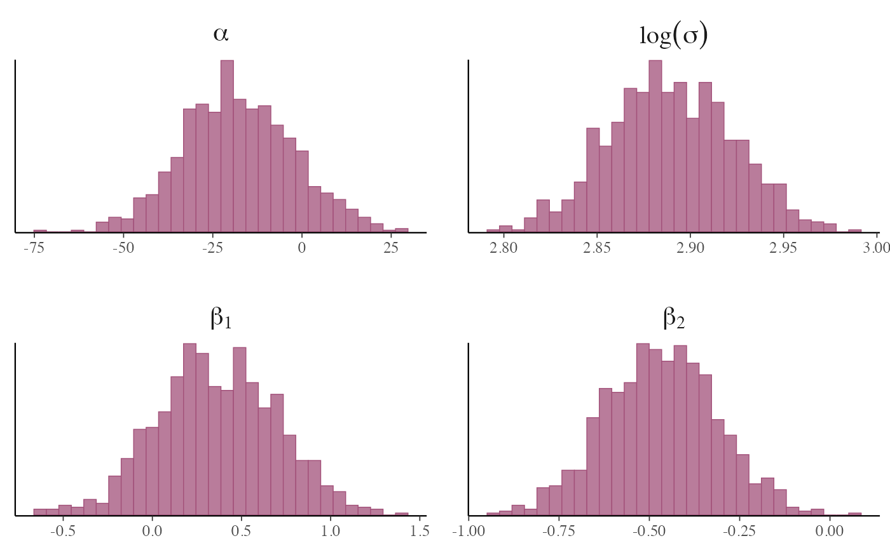
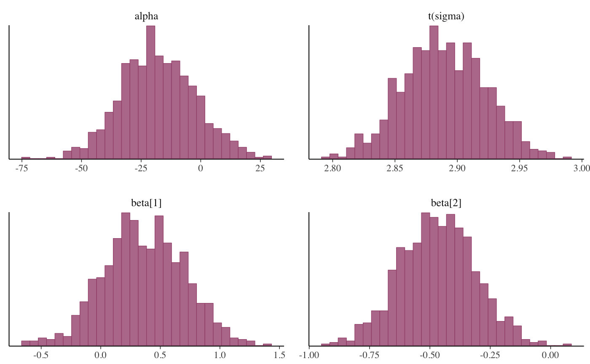
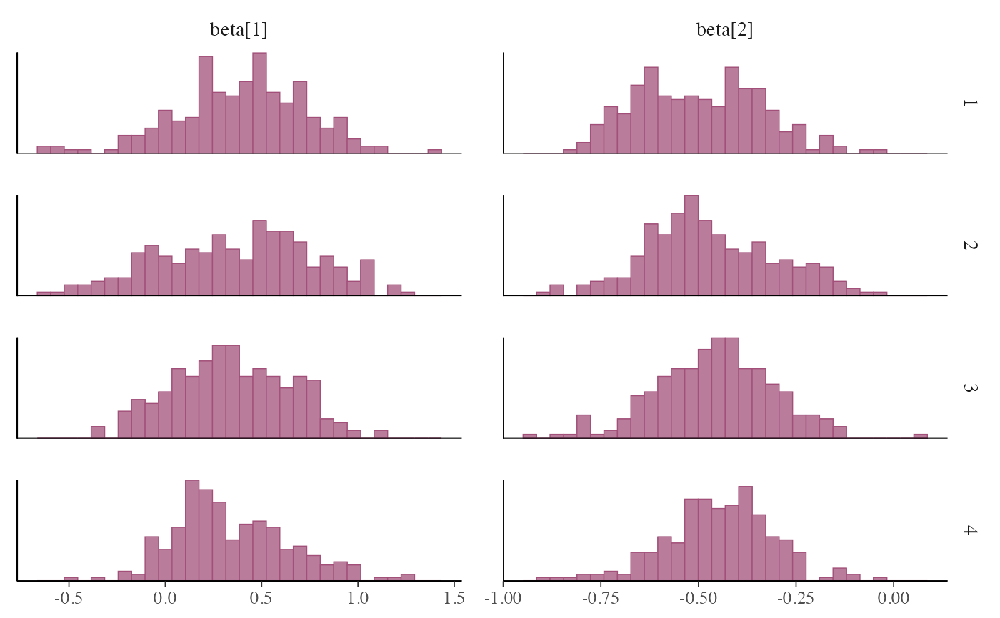
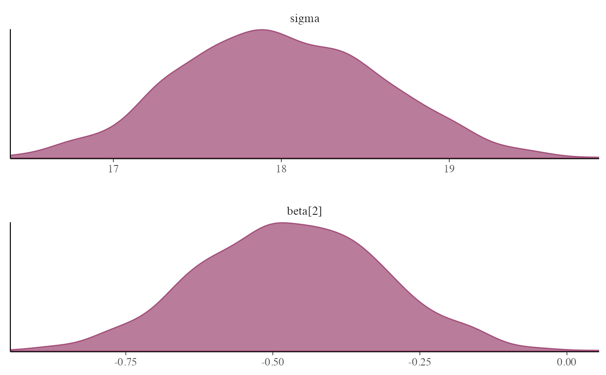
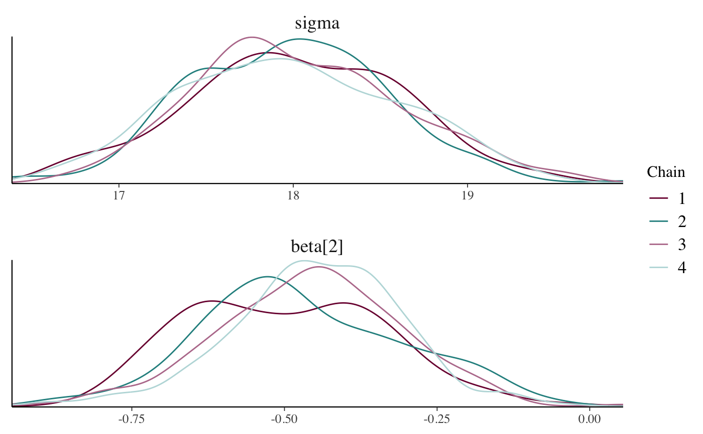
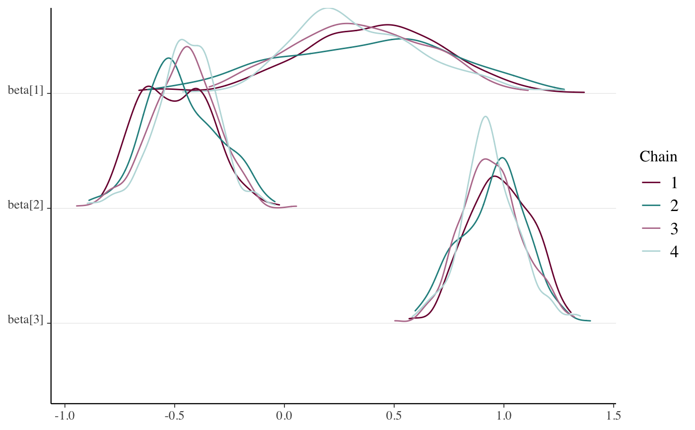
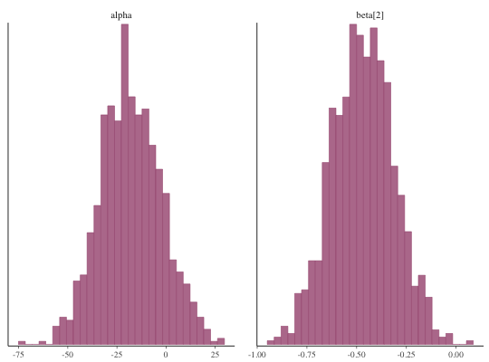

R/mcmc-distributions.R
MCMC-distributions.RdVarious types of histograms and kernel density plots of MCMC draws. See the Plot Descriptions section, below, for details.
mcmc_hist(
x,
pars = character(),
regex_pars = character(),
transformations = list(),
...,
facet_args = list(),
binwidth = NULL,
breaks = NULL,
freq = TRUE,
alpha = 1
)
mcmc_dens(
x,
pars = character(),
regex_pars = character(),
transformations = list(),
...,
facet_args = list(),
trim = FALSE,
bw = NULL,
adjust = NULL,
kernel = NULL,
n_dens = NULL,
alpha = 1
)
mcmc_hist_by_chain(
x,
pars = character(),
regex_pars = character(),
transformations = list(),
...,
facet_args = list(),
binwidth = NULL,
freq = TRUE,
alpha = 1
)
mcmc_dens_overlay(
x,
pars = character(),
regex_pars = character(),
transformations = list(),
...,
facet_args = list(),
color_chains = TRUE,
trim = FALSE,
bw = NULL,
adjust = NULL,
kernel = NULL,
n_dens = NULL
)
mcmc_dens_chains(
x,
pars = character(),
regex_pars = character(),
transformations = list(),
...,
color_chains = TRUE,
bw = NULL,
adjust = NULL,
kernel = NULL,
n_dens = NULL
)
mcmc_dens_chains_data(
x,
pars = character(),
regex_pars = character(),
transformations = list(),
...,
bw = NULL,
adjust = NULL,
kernel = NULL,
n_dens = NULL
)
mcmc_violin(
x,
pars = character(),
regex_pars = character(),
transformations = list(),
...,
facet_args = list(),
probs = c(0.1, 0.5, 0.9)
)An object containing MCMC draws:
A 3-D array, matrix, list of matrices, or data frame. The MCMC-overview page provides details on how to specify each these.
A draws object from the posterior package (e.g.,
draws_array, draws_rvars, etc.).
An object with an as.array() method that returns the same kind of 3-D
array described on the MCMC-overview page.
An optional character vector of parameter names. If neither
pars nor regex_pars is specified then the default is to use all
parameters. As of version 1.7.0, bayesplot also supports 'tidy'
parameter selection by specifying pars = vars(...), where ... is
specified the same way as in dplyr::select(...) and
similar functions. Examples of using pars in this way can be found on the
Tidy parameter selection page.
An optional regular expression to use for
parameter selection. Can be specified instead of pars or in addition to
pars. When using pars for tidy parameter selection, the regex_pars
argument is ignored since select helpers
perform a similar function.
Optionally, transformations to apply to parameters
before plotting. If transformations is a function or a single string
naming a function then that function will be used to transform all
parameters. To apply transformations to particular parameters, the
transformations argument can be a named list with length equal to
the number of parameters to be transformed. Currently only univariate
transformations of scalar parameters can be specified (multivariate
transformations will be implemented in a future release). If
transformations is a list, the name of each list element should be a
parameter name and the content of each list element should be a function
(or any item to match as a function via match.fun(), e.g. a
string naming a function). If a function is specified by its name as a
string (e.g. "log"), then it can be used to construct a new
parameter label for the appropriate parameter (e.g. "log(sigma)").
If a function itself is specified
(e.g. log or function(x) log(x))
then "t" is used in the new parameter label to indicate that the
parameter is transformed (e.g. "t(sigma)").
Note: due to partial argument matching transformations can be
abbreviated for convenience in interactive use (e.g., transform).
Currently ignored.
A named list of arguments (other than facets) passed
to ggplot2::facet_wrap() or ggplot2::facet_grid()
to control faceting. Note: if scales is not included in facet_args
then bayesplot may use scales="free" as the default (depending
on the plot) instead of the ggplot2 default of scales="fixed".
Passed to ggplot2::geom_histogram() to override
the default binwidth.
Passed to ggplot2::geom_histogram() as an
alternative to binwidth.
For histograms, freq=TRUE (the default) puts count on the
y-axis. Setting freq=FALSE puts density on the y-axis. (For many
plots the y-axis text is off by default. To view the count or density
labels on the y-axis see the yaxis_text() convenience
function.)
Passed to the geom to control the transparency.
A logical scalar passed to ggplot2::geom_density().
Optional arguments passed to
stats::density() to override default kernel density estimation
parameters. n_dens defaults to 1024.
Option for whether to separately color chains.
A numeric vector passed to ggplot2::geom_violin()'s
draw_quantiles argument to specify at which quantiles to draw
horizontal lines. Set to NULL to remove the lines.
A ggplot object that can be further customized using the ggplot2 package.
mcmc_hist()Histograms of posterior draws with all chains merged.
mcmc_dens()Kernel density plots of posterior draws with all chains merged.
mcmc_hist_by_chain()Histograms of posterior draws with chains separated via faceting.
mcmc_dens_overlay()Kernel density plots of posterior draws with chains separated but overlaid on a single plot.
mcmc_violin()The density estimate of each chain is plotted as a violin with horizontal lines at notable quantiles.
mcmc_dens_chains()Ridgeline kernel density plots of posterior draws with chains separated
but overlaid on a single plot. In mcmc_dens_overlay() parameters
appear in separate facets; in mcmc_dens_chains() they appear in the
same panel and can overlap vertically.
set.seed(9262017)
# some parameter draws to use for demonstration
x <- example_mcmc_draws()
dim(x)
#> [1] 250 4 4
dimnames(x)
#> $Iteration
#> NULL
#>
#> $Chain
#> [1] "chain:1" "chain:2" "chain:3" "chain:4"
#>
#> $Parameter
#> [1] "alpha" "sigma" "beta[1]" "beta[2]"
#>
##################
### Histograms ###
##################
# histograms of all parameters
color_scheme_set("brightblue")
mcmc_hist(x)
#> `stat_bin()` using `bins = 30`. Pick better value with `binwidth`.

# histograms of some parameters
color_scheme_set("pink")
mcmc_hist(x, pars = c("alpha", "beta[2]"))
#> `stat_bin()` using `bins = 30`. Pick better value with `binwidth`.

# \donttest{
mcmc_hist(x, pars = "sigma", regex_pars = "beta")
#> `stat_bin()` using `bins = 30`. Pick better value with `binwidth`.

# }
# example of using 'transformations' argument to plot log(sigma),
# and parsing facet labels (e.g. to get greek letters for parameters)
mcmc_hist(x, transformations = list(sigma = "log"),
facet_args = list(labeller = ggplot2::label_parsed)) +
facet_text(size = 15)
#> `stat_bin()` using `bins = 30`. Pick better value with `binwidth`.

# \donttest{
# instead of list(sigma = "log"), you could specify the transformation as
# list(sigma = log) or list(sigma = function(x) log(x)), but then the
# label for the transformed sigma is 't(sigma)' instead of 'log(sigma)'
mcmc_hist(x, transformations = list(sigma = log))
#> `stat_bin()` using `bins = 30`. Pick better value with `binwidth`.

# separate histograms by chain
color_scheme_set("pink")
mcmc_hist_by_chain(x, regex_pars = "beta")
#> `stat_bin()` using `bins = 30`. Pick better value with `binwidth`.

# }
#################
### Densities ###
#################
mcmc_dens(x, pars = c("sigma", "beta[2]"),
facet_args = list(nrow = 2))

# \donttest{
# separate and overlay chains
color_scheme_set("mix-teal-pink")
mcmc_dens_overlay(x, pars = c("sigma", "beta[2]"),
facet_args = list(nrow = 2)) +
facet_text(size = 14)

x2 <- example_mcmc_draws(params = 6)
mcmc_dens_chains(x2, pars = c("beta[1]", "beta[2]", "beta[3]"))

# }
# separate chains as violin plots
color_scheme_set("green")
mcmc_violin(x) + panel_bg(color = "gray20", size = 2, fill = "gray30")
